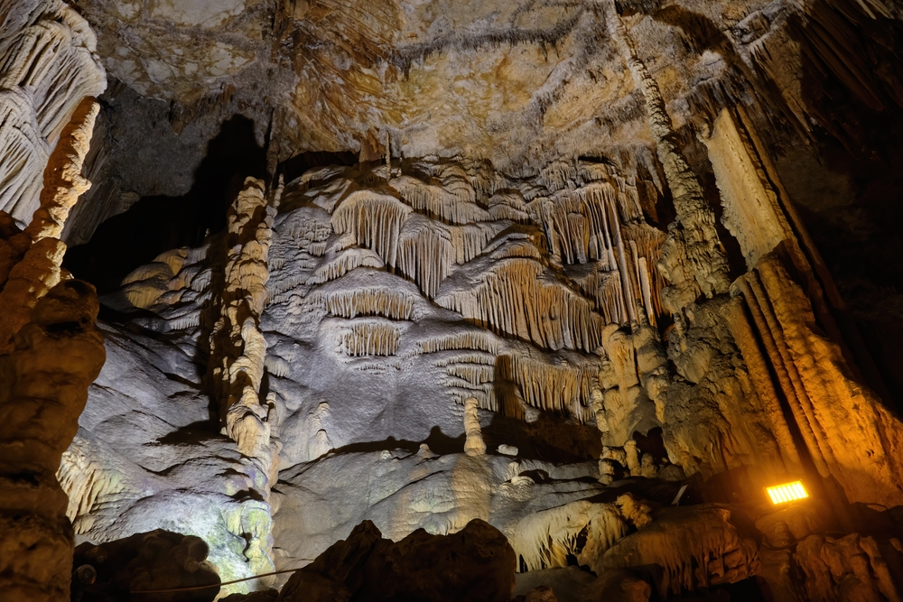
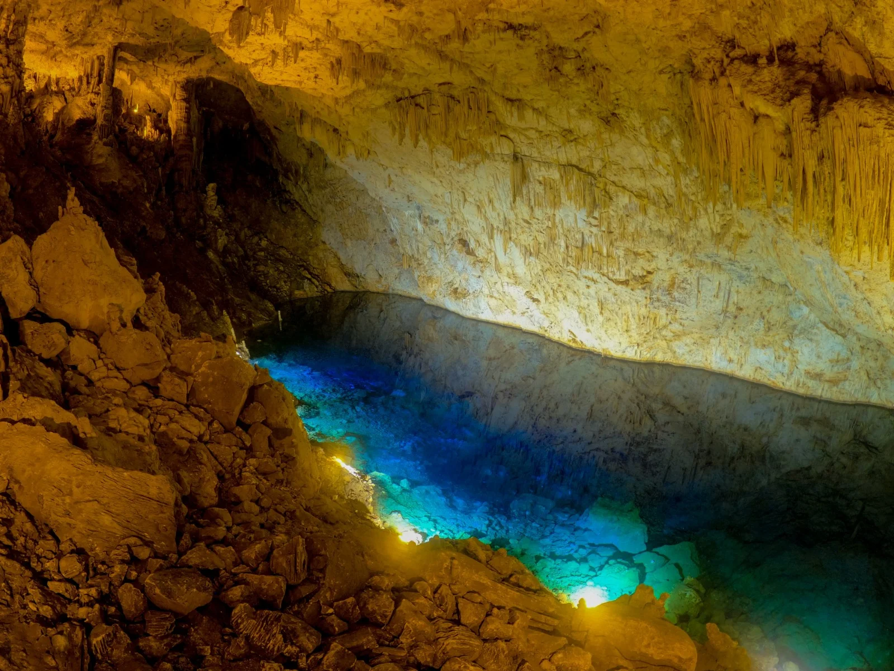
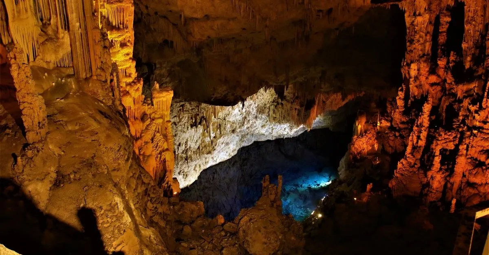

Ayna gibi yansıması sebebiyle Aynalı Göl adını alan Gilindire Mağarası, muhteşem bir doğa harikasıdır. Buzul çağına kadar dayanan çok köklü bir geçmişe sahip olan göl, denizden 46 metre kadar yükseklikte bulunuyor. %80 oranında neme sahip olması sebebiyle de dikkat çeken ve bu sebeple şifalı olduğu düşünülen aynalı göre, yerli ve yabancı turistler tarafından Mersin’in en dikkat çekici yerlerinden biri olarak ele alınıyor. Girişinin bir falezin ucunda olması dikkat çekmesini sağlayan bir diğer özelliği. Nem oranı sebebiyle çeşitli hastalıklara dair şifa kaynağı olduğu bilinen Aynalıgöl (Gilindire Mağarası), sağlık turizmi açısından önemli bir rol oynuyor.
  